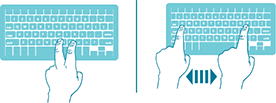
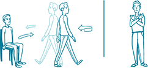

Objective Movement
Disorders Measurement
Take control of measuring your movement disorder symptoms today!
The Movement Disorder Objective Measurement System 2.0 features easy-to-use tests that enable you to measure your performance and store your results online. It's free.
All data can be saved for later viewing, and viewed graphically over time.
Dexterity System
From any web enabled device you can take a simple test to see how fast you can press keys on a keyboard
Mobility System
Self-administer a Timed-Up-and-Go (TUG) test or a Postural-Stability-and-Sway test on any smartphone.
